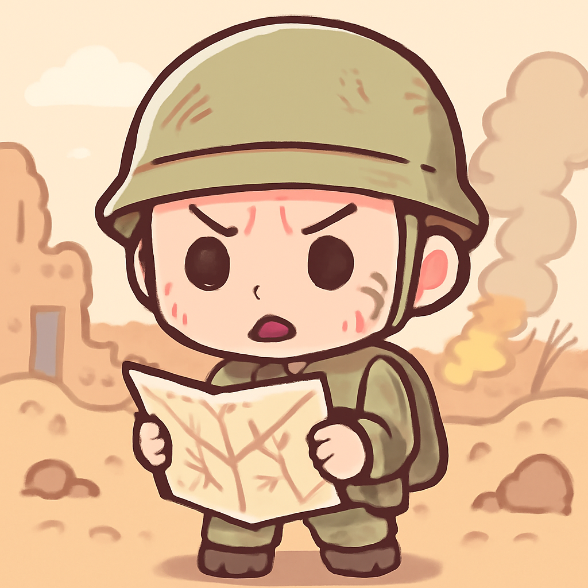

其一 · 黎巴嫩南部 · 以色列發出撤離令
以色列軍方宣佈黎巴嫩南部為戰鬥區

在黎巴嫩南部，以色列軍方最近發出撤離令，將扎哈拉尼河以南地區標示為戰鬥區，並對真主黨發出威脅，準備進行新的空襲。這次動作意味著局勢越來越緊張，可能引發更大範圍的衝突，也讓當地民眾的生活再次陷入不安。希望大家在這樣的時期多一點關心與理解，遠離戰火。
🔗 原始新聞 ↗
2026-05-28 · 以古觀今，以笑抗愁
以色列軍方宣佈黎巴嫩南部為戰鬥區

在黎巴嫩南部，以色列軍方最近發出撤離令，將扎哈拉尼河以南地區標示為戰鬥區，並對真主黨發出威脅，準備進行新的空襲。這次動作意味著局勢越來越緊張，可能引發更大範圍的衝突，也讓當地民眾的生活再次陷入不安。希望大家在這樣的時期多一點關心與理解，遠離戰火。
🔗 原始新聞 ↗
剛果伊波拉疫情與內戰衝突加劇
世界衛生組織警告，剛果民主共和國面臨的伊波拉疫情與持續的衝突正形成「災難性碰撞」，使得防疫工作更加困難。當地的戰鬥行動妨礙了醫療人員的救援，情況相當危急。這不僅是健康問題，更是人道危機，讓人擔心未來的局勢是否能夠好轉。希望這場疫情能夠早日結束。
🔗 原始新聞 ↗
美國紙廠發生化學品爆炸事故
在美國華盛頓州的長維尤，一家紙廠發生化學品爆炸事故，造成一名工人喪生，另外九人受傷並失踪。事故發生後，救援隊立刻展開搜索，然而仍然有不少人下落不明。這類事故不僅威脅工人的安全，還提醒我們在工業生產中必須更加謹慎，以避免未來重演。希望受傷人員能早日康復。
🔗 原始新聞 ↗
俄國對基輔進行新一輪襲擊
俄國最近對烏克蘭首都基輔發動了新一輪的攻擊，並發出威脅可能會有更多行動。這不僅讓當地居民感受到緊張，也讓國際社會擔心局勢將再次惡化。隨著俄烏戰爭的持續，和平的希望似乎越來越渺茫，也讓人不禁思考，究竟何時才能迎來真正的和平？
🔗 原始新聞 ↗
烏干達因伊波拉疫情關閉邊界
面對與剛果接壤的伊波拉疫情擴散，烏干達政府決定關閉邊界，防止病毒進一步擴散。雖然當地已有七例確診，但官方表示擁有強大的疫情監控系統，能夠有效應對危機。這一措施不僅是保護國民健康，也是各國在疫情面前的共同責任，希望大家能夠攜手抗擊疫情。
🔗 原始新聞 ↗